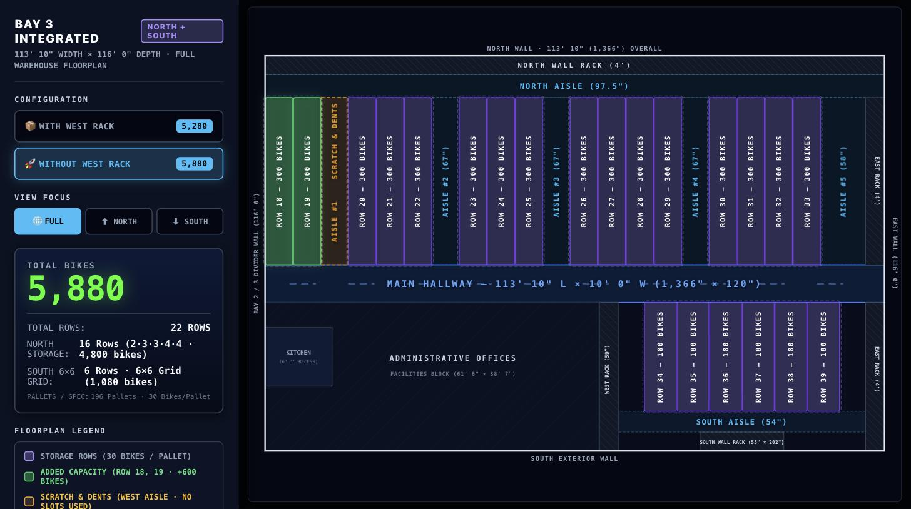
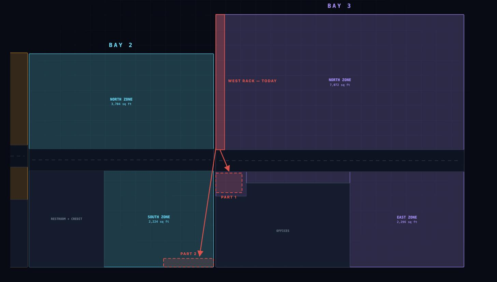
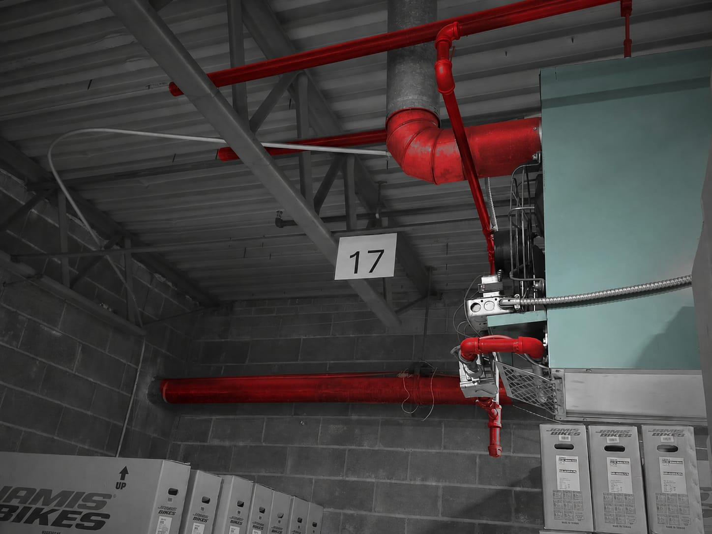

Bay 3 was laid out for 4,400 bikes. Rebuilt around one repeating unit, with fewer and wider aisles and one rack moved out of the bay, the same floor holds 5,880.
Part of this is already on the floor. The rest is what we are asking for.
Bay 3 was laid out to hold 4,400 bikes. Reworking the grid around a single repeating unit — 60″ × 62″, which takes a tower or a strapped, double-stacked pallet equally well — running fewer aisles, and moving one rack out of the bay takes it to 5,880: same floor, aisles wide enough that our equipment clears the bikes.
Fewer aisles, and every one of them wider. Bay 3 still gains 1,480 bikes.
The whole grid is built from one repeating unit — a 60″ × 62″ sublocation. Measured against that unit, the floor north of the main hallway takes 16 rows: two blocks of four, two blocks of three, and the block of two that the west rack is standing on today.
Getting there means running fewer aisles than the original layout had. The floor that gives back is not turned into more storage — it is averaged across the aisles that remain, so each one comes out wider. That width is what carries our equipment through cleanly, and it is why the aisles are the size they are in this plan.

The layout takes trikes as readily as it takes bikes — put in ahead of the Florida inventory coming our way, so nothing has to be rearranged again when it lands.
The aisle along the west side is marked as the scratch & dents lane. It is aisle floor, so nothing is stored there and no pallet slot is given up for it — the 5,880 stands.
Same floor space either way — so it should be the way that is safer to work.
A tower built on the ground and a strapped, double-stacked pallet take up the same floor. Since the space is the same, the question is only which one is better to live with, and the pallet wins on every count: it can be parked closer to its neighbour, it is easy to get to, and our power jacks and manual jacks move a double-stacked pallet easily, at any moment, instead of the floor being handled bike by bike. That is where the high-quantity SKUs go, and the first block is filling now.
Handling bikes at height and driving equipment past them both carry risk. A stable platform to build from and an aisle wide enough to pass through reduce it on both counts. The platforms are already in place; the aisle widths come with this layout.
The tire and Taxi parts rack. Moving it out of Bay 3 is what frees the floor for rows 18 and 19.
It does not move in one piece. Part of it stays in Bay 3, tucked past the main hallway where it is clear of the storage grid, and part goes across to the south wall of Bay 2. Either way the west strip comes free, which is all rows 18 and 19 need.
How the rest of Bay 2 gets laid out around it is a separate job, and it has not been done yet — it is the next thing we take on.


Bay 3 is the one that is worked out. The other two follow, in that order.
The extra room in Bay 3 is what we need for incoming containers and for the models we carry in the highest counts. Bay 2 and Bay 1 get the same treatment once Bay 3 is standing.
Maximize every square foot.